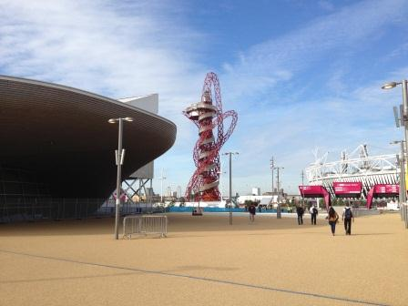

Shift One Gold Team Automatic car
Wednesday 18th July 2012

Arrived for first shift 30 minutes before my actual shift time. Checked in with workforce who handed over a green wristband, bottle of water, meal voucher, newsletter plus a cool bag to keep the lunch in. Then checked in with the Fleet team who handed over a clipbpard folder, radio and car key with fuel card fob. Trying to carry all that was interesting. Decided to bring in the big uniform bag from now on. Fleet told me that having had breakfast I should head off to the Olympic Family Hotels ie Park Lane.
Breakfast was a choice of a bacon and cheese roll or a scrambled egg and mushroom roll. I went for the later. Lunch was a large filled roll, pice of fruit, granola bar and an additional drinks bottle. No sign of any team leader to tell me what to do so headed over to the garage to check out the car. Radiod in that I was leaving and handed over the paperwork
The first problem was finding my way out of the Olympic Park. On the Venue training day we had turned left out of the garage but that is now blocked off to give pedestrian access at Stratford Gate. On the Role training day we turned right but when I did that the way out was blocked. Subsequently found out that was the back of the Olympic Village. Eventually followed my nose and found my way out of the Park via the Etin Manor exit.
Set the Sat Nav for the Hilton Hotel on Park Lane because the Curzon Street staging area wasn't on the list of DORS destinations. Got a bit lost at the end but spotted people in volunteer uniforms and stopped to ask where the OFH staging area in Curzon Street was. Was told it was around the corner but to stay where I was in the pick up zone as there was room. Great way to jump the queue.
Spent a bit of time chatting to a Community Police officer, the Fleet Transport team girl and two fellow drivers. A couple of people in front of me got real live customers going out to the airports. A guy with accreditation tried to get a lift with 2 people who didn't and was rebuffed politely. I almost went to Harlow to the doping centre as a T2 driver was awol but whilst control were getting the postcode, the missing driver showed up.
I ended up driving around the Park Lane family hotels with a volunteer from the transport team in the back pretending to be a customer so the meeters and greeters could practice their routines. That meant I had to join the back of the Curzon St. queue. Spent the rest of the shift chatting to fellow drivers and transport team guys, Did get a cabbie shouting abuse at us at one point. He anted to know what qualifications we had to be taking his business. We smiled politely at him and said nowt.
Was called back to to the FDO as shift end time approcahed. Had to use non DORS sat nav as DORS was playing up.